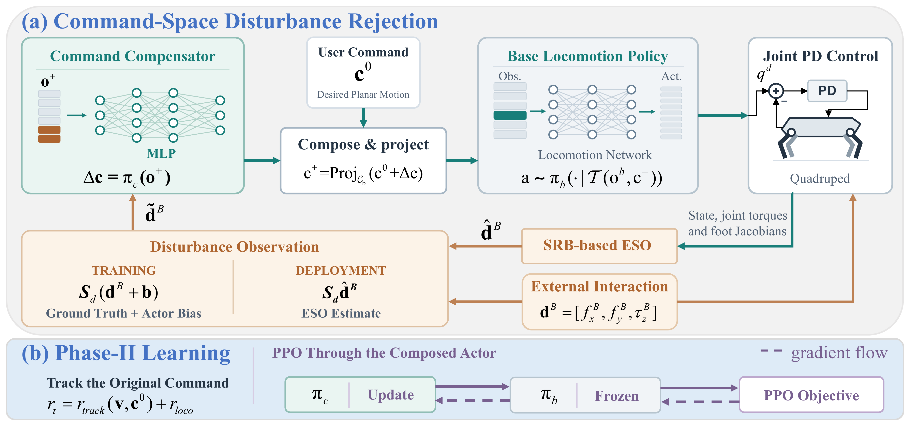
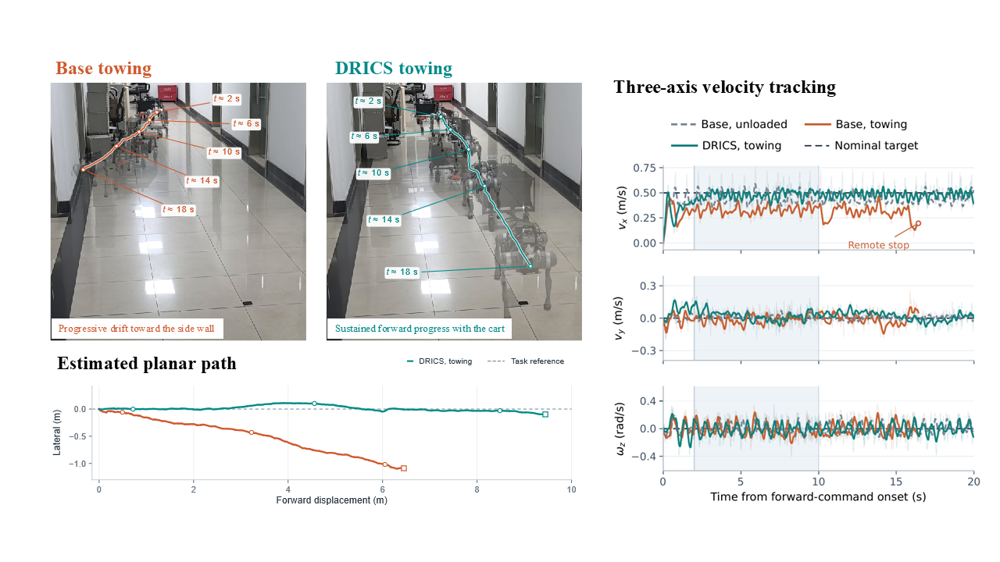
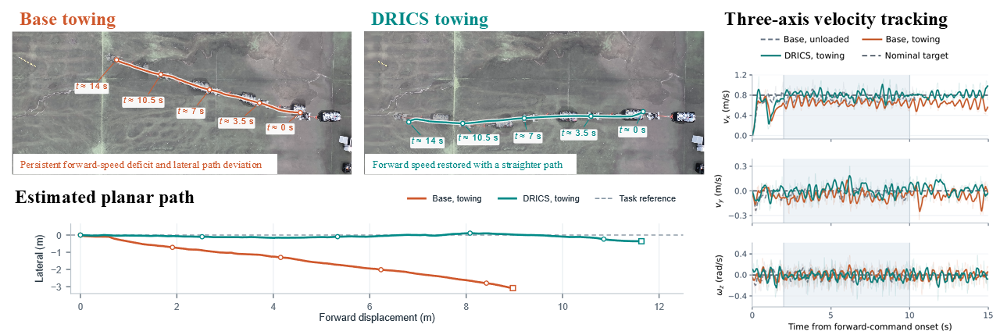
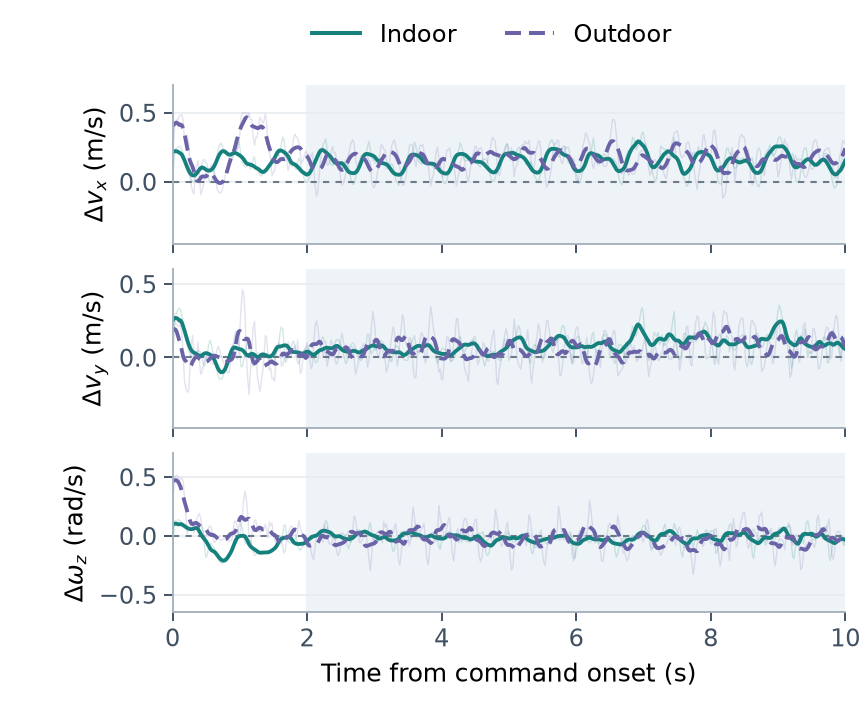
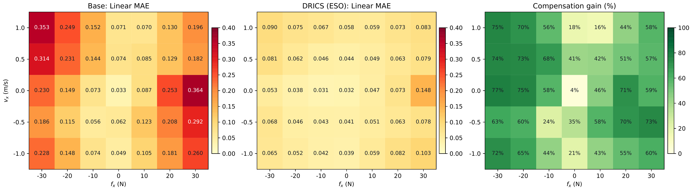
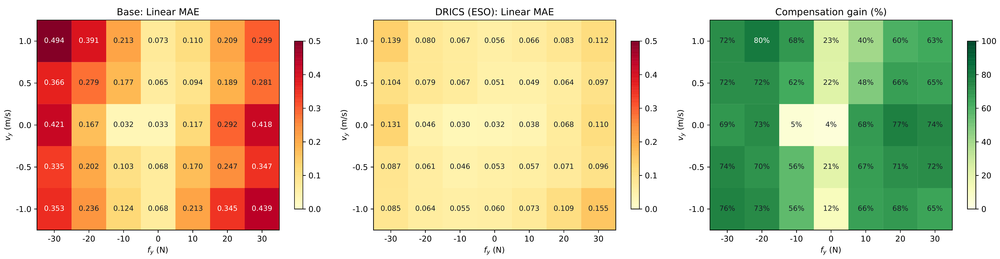
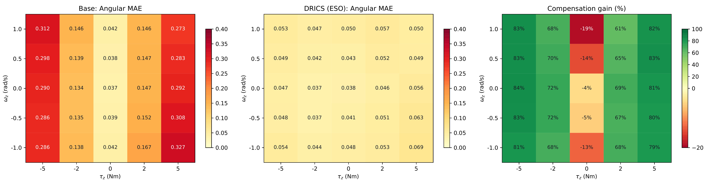

Abstract
Quadruped locomotion policies achieve agile and stable motion under nominal conditions, but sustained interaction forces from payloads and resistive terrain can degrade velocity tracking or even stability. Retraining the entire locomotion policy for each interaction setting is costly and may degrade previously acquired locomotion skills. We present DRICS, a learned command-space disturbance-rejection method that augments a frozen command-conditioned locomotion policy. An upper-level compensator maps proprioception and an estimate of the planar disturbance wrench to bounded corrections of forward velocity, lateral velocity, and yaw rate. The corrected command is executed by the frozen base policy, whereas the reinforcement-learning objective remains defined with respect to the original user command. A single-rigid-body model defines a low-dimensional disturbance representation, and an extended-state observer provides force and yaw moment estimates. In simulation, DRICS with observer estimates reduces linear-velocity and yaw-rate mean absolute errors under disturbance by 69.1% and 62.9%, respectively, relative to Base, while preserving nominal performance with PPO and HIM base policies. Experiments on a Unitree Go2 validate the approach in indoor and outdoor loaded-cart towing, reducing forward-velocity mean absolute error by 68.0% and 46.2%, respectively, relative to towing with Base. These results demonstrate that command-space compensation is a modular alternative to re-learning joint-level locomotion control.
Overview

A command compensator reshapes the velocity command of the frozen base policy. Disturbance observations use ground truth during training and ESO estimates at deployment; actor gradients traverse the frozen base and update only the compensator.
DRICS augments a frozen command-conditioned locomotion policy with a learned command-space disturbance-rejection layer. A planar single-rigid-body (SRB) model defines a compact body-frame disturbance dB = [fx, fy, τz], which an extended-state observer (ESO) estimates on-board from base motion and the reconstructed contact wrench. An upper-level compensator maps proprioception and the disturbance estimate to bounded corrections of the forward velocity, lateral velocity, and yaw rate commands; the corrected command is executed by the frozen base policy, while the RL objective remains defined with respect to the original user command.
- Command-space disturbance rejection. A hierarchical compensator learns bounded 3-D command corrections through the frozen locomotion policy: gradients traverse it during training, but its parameters are never updated.
- Model-informed disturbance estimation. The SRB model and ESO bridge privileged training signals and on-board estimates; asymmetric actor–critic observations improve robustness to estimation bias.
- Cross-policy and hardware validation. DRICS attaches to frozen PPO and HIM base policies without retraining, and is validated in indoor and outdoor loaded-cart towing on a Unitree Go2.
Real-World Experiments
We deploy DRICS on a Unitree Go2 equipped with a Jetson AGX Orin and a Livox MID-360 LiDAR (FAST-LIO2 state estimation at 50 Hz). The robot tows a loaded camping cart through a rope, producing sustained disturbances from rolling resistance, wheel steering, and changing rope direction. The base policy remains frozen; DRICS uses ESO estimates only.
Indoor Loaded-Cart Towing (0.5 m/s)
A 2.2 m-wide marble corridor; the cart carries a second Go2 and 9 L of water (3 L on one side). Towing drops the Base mean forward velocity from 0.442 to 0.335 m/s with progressive drift toward the side wall, whereas DRICS restores it to 0.479 m/s, reducing forward-velocity MAE from 0.166 to 0.053 m/s (68.0% reduction).
Base (towing): slows down and drifts toward the side wall
DRICS (towing): sustains forward progress with the cart

Indoor towing: snapshots, estimated planar path, and three-axis velocity tracking (shaded: 2–10 s analysis window)
Outdoor Towing on a Rubber Surface (0.8 m/s)
On a rubber-surfaced sports field with a 21-L payload, towing reduces the Base mean forward velocity from 0.725 to 0.649 m/s, whereas DRICS reaches 0.803 m/s, reducing forward-velocity MAE from 0.158 to 0.085 m/s (46.2% reduction) without degrading lateral or yaw tracking.
Base (towing): persistent forward-speed deficit and lateral deviation
DRICS (towing): forward speed restored with a straighter path

Outdoor towing: snapshots, estimated planar path, and three-axis velocity tracking (shaded: 2–10 s analysis window)
Quantitative Results
Hardware tracking MAE over the 2–10 s analysis window, reported as trial mean ± sample SD (n = number of trials). Bold marks the lower towing forward MAE in each scene.
| Controller / Load | n | vx MAE [m/s] ↓ | vy MAE [m/s] ↓ | ωz MAE [rad/s] ↓ |
|---|---|---|---|---|
| Indoor: vxd = 0.5 m/s | ||||
| Base, unloaded | 1 | 0.099 | 0.037 | 0.086 |
| Base, towing | 2 | 0.166 ± 0.007 | 0.049 ± 0.003 | 0.108 ± 0.006 |
| DRICS, towing | 2 | 0.053 ± 0.002 | 0.050 ± 0.002 | 0.096 ± 0.010 |
| Outdoor: vxd = 0.8 m/s | ||||
| Base, unloaded | 2 | 0.123 ± 0.007 | 0.060 ± 0.003 | 0.129 ± 0.004 |
| Base, towing | 2 | 0.158 ± 0.003 | 0.088 ± 0.006 | 0.130 ± 0.004 |
| DRICS, towing | 2 | 0.085 ± 0.002 | 0.082 ± 0.012 | 0.115 ± 0.015 |

Learned command corrections in towing. The compensator outputs a mean forward reference of 0.646 m/s (indoor) and 0.962 m/s (outdoor) to the frozen base policy, compensating for the sustained towing resistance.
Simulation Results
All simulation experiments run in Isaac Gym with 50 parallel environments. The random scenario samples velocity commands (vx, vy, ωz ∈ [−1, 1]) together with random disturbances (fx, fy ∈ [−30, 30] N, τz ∈ [−5, 5] N·m); metrics are linear- and angular-velocity MAE (Ev, Eω) and survival rate, aggregated as mean ± SD across 3 random seeds.
Random-Scenario Evaluation
Under disturbance, DRICS-ESO reduces Ev from 0.243 to 0.075 m/s, matching ground-truth-observation performance (0.072); the end-to-end Unified variant attains 0.066. All compensator variants keep survival above 99%.
| Method | No Disturbance | With Disturbance | ||||
|---|---|---|---|---|---|---|
| Ev [m/s] ↓ | Eω [rad/s] ↓ | Surv. [%] ↑ | Ev [m/s] ↓ | Eω [rad/s] ↓ | Surv. [%] ↑ | |
| Base | 0.063 ± 0.006 | 0.038 ± 0.005 | 99.9 ± 0.1 | 0.243 ± 0.003 | 0.197 ± 0.008 | 93.8 ± 0.8 |
| DRICS-GT | 0.052 ± 0.005 | 0.039 ± 0.005 | 99.9 ± 0.1 | 0.072 ± 0.005 | 0.061 ± 0.005 | 99.5 ± 0.2 |
| DRICS-ESO | 0.052 ± 0.005 | 0.039 ± 0.005 | 99.9 ± 0.1 | 0.075 ± 0.005 | 0.073 ± 0.005 | 99.3 ± 0.2 |
| Unified-GT | 0.056 ± 0.003 | 0.044 ± 0.004 | 100.0 | 0.066 ± 0.004 | 0.053 ± 0.004 | 99.9 ± 0.1 |
| Unified-ESO | 0.057 ± 0.003 | 0.045 ± 0.003 | 100.0 | 0.066 ± 0.004 | 0.064 ± 0.003 | 99.9 ± 0.1 |
Fixed-Condition Ablation
Fixed disturbance dB = (20, 20, 4 N·m) with two motion patterns. Reduction is averaged over the four errors relative to the disturbed Base: DRICS-ESO removes 75.8% of the disturbance-induced error, clearly outperforming domain randomization (DR-Base, 65.5%), and the end-to-end Unified-ESO reaches 79.3%.
| Method | Arc (1, 0, 1) | Diagonal (1, 1, 0) | Reduction [%] | ||
|---|---|---|---|---|---|
| Ev ↓ | Eω ↓ | Ev ↓ | Eω ↓ | ||
| Base, no disturbance | 0.059 ± 0.003 | 0.038 ± 0.002 | 0.068 ± 0.003 | 0.028 ± 0.002 | – |
| Base | 0.295 ± 0.003 | 0.260 ± 0.002 | 0.303 ± 0.004 | 0.353 ± 0.003 | 0.0 |
| DR-Base | 0.080 ± 0.002 | 0.112 ± 0.001 | 0.122 ± 0.004 | 0.097 ± 0.001 | 65.5 |
| DRICS-GT | 0.073 ± 0.002 | 0.055 ± 0.002 | 0.077 ± 0.003 | 0.066 ± 0.003 | 77.5 |
| DRICS-ESO | 0.079 ± 0.002 | 0.056 ± 0.002 | 0.091 ± 0.003 | 0.065 ± 0.003 | 75.8 |
| Unified-GT | 0.075 ± 0.002 | 0.047 ± 0.003 | 0.062 ± 0.003 | 0.048 ± 0.003 | 80.6 |
| Unified-ESO | 0.078 ± 0.002 | 0.058 ± 0.003 | 0.063 ± 0.003 | 0.047 ± 0.005 | 79.3 |
Disturbance–Velocity Envelopes
We sweep each command–disturbance pair: translational grids sample vd ∈ {−1, −0.5, 0, 0.5, 1} m/s × f ∈ {−30, −20, −10, 0, 10, 20, 30} N (35 points each), and the yaw grid samples ωd ∈ {−1, ..., 1} rad/s × τz ∈ {−5, ..., 5} N·m (25 points). The heatmaps below show DRICS-ESO results for all three channels.

Forward: vx × fx

Lateral: vy × fy

Yaw: ωz × τz
Averaged over each grid (gain = (EBase − EDRICS) / EBase), DRICS-ESO achieves mean gains of 53.5%–57.9%, increasing to 65.0%–70.5% at large disturbances; yaw tracking improves at 20 of 25 grid points, reaching 81.8% at |τz| = 5 N·m. ESO thus retains most of the gain achieved with ground-truth disturbance observations.
| Grid | GT, all | ESO, all | GT, large | ESO, large |
|---|---|---|---|---|
| vx–fx | 55.8% | 53.5% | 68.8% | 65.0% |
| vy–fy | 59.0% | 57.9% | 72.4% | 70.5% |
| ωz–τz | 60.0% | 57.7% | 82.6% | 81.8% |
Generalization to a Frozen HIM Base Policy
Attaching DRICS to a frozen HIM base policy under the same random-scenario protocol. Under disturbance, HIM-DRICS-ESO reduces Ev by 68.5% and Eω by 60.5%, and raises survival from 92.9% to 99.3%, while preserving nominal performance.
| Method | No Disturbance | With Disturbance | ||||
|---|---|---|---|---|---|---|
| Ev [m/s] ↓ | Eω [rad/s] ↓ | Surv. [%] ↑ | Ev [m/s] ↓ | Eω [rad/s] ↓ | Surv. [%] ↑ | |
| HIM-Base | 0.068 | 0.038 | 100.0 | 0.304 | 0.189 | 92.9 |
| HIM-DRICS-GT | 0.052 | 0.041 | 100.0 | 0.086 | 0.066 | 98.8 |
| HIM-DRICS-ESO | 0.052 | 0.041 | 100.0 | 0.096 | 0.075 | 99.3 |
Paper
BibTeX
@inproceedings{anonymous2027drics,
title={DRICS: Learning Disturbance Rejection in Command Space for Robust Quadruped Locomotion},
author={Anonymous Authors},
booktitle={Submitted to the IEEE International Conference on Robotics and Automation (ICRA)},
year={2027}
}